Culture of Bangladesh
 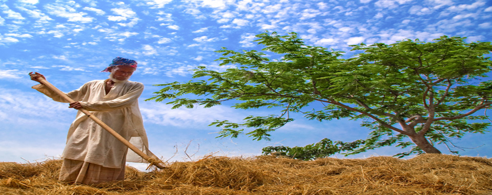
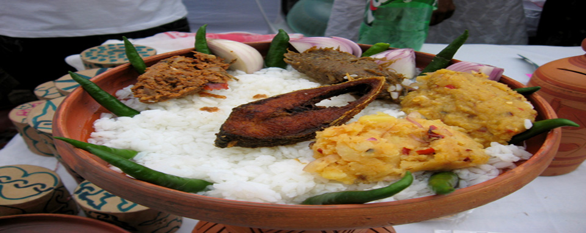
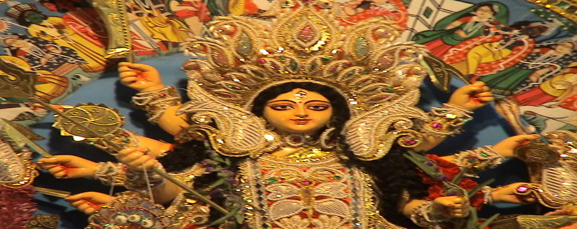
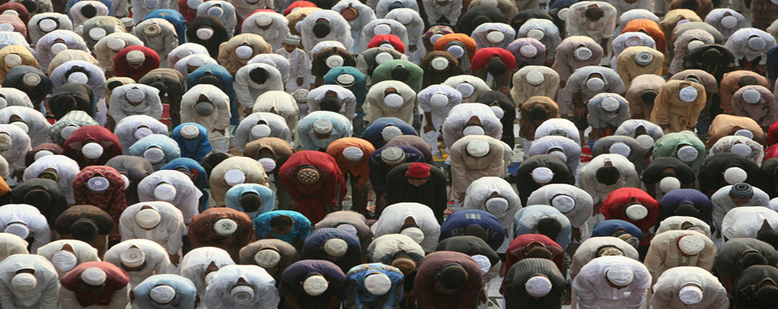
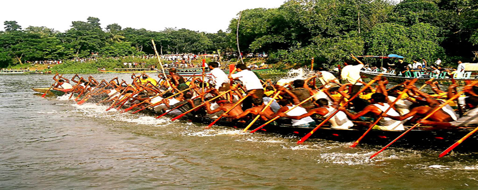
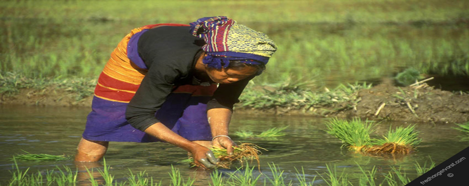
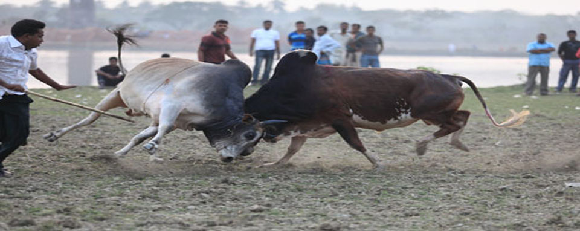
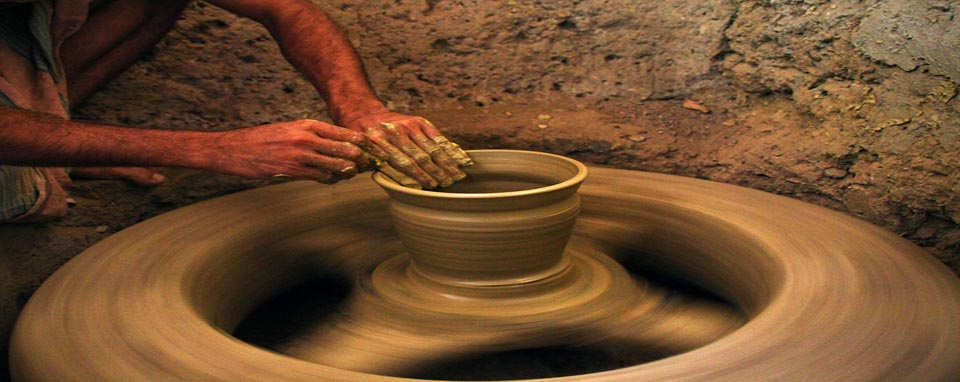
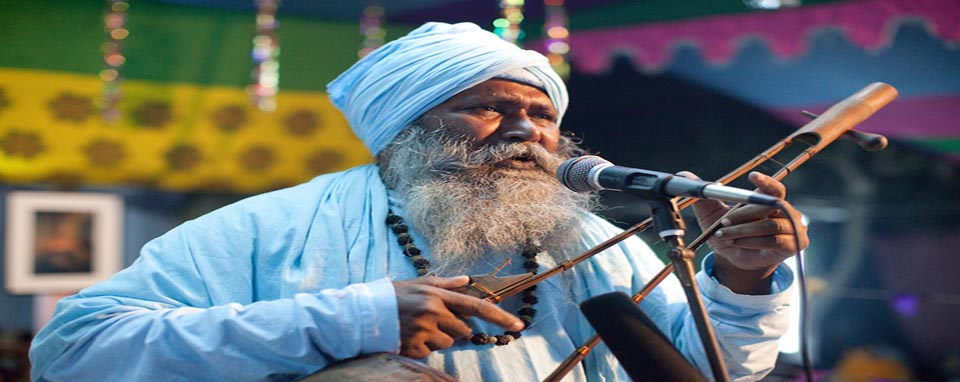
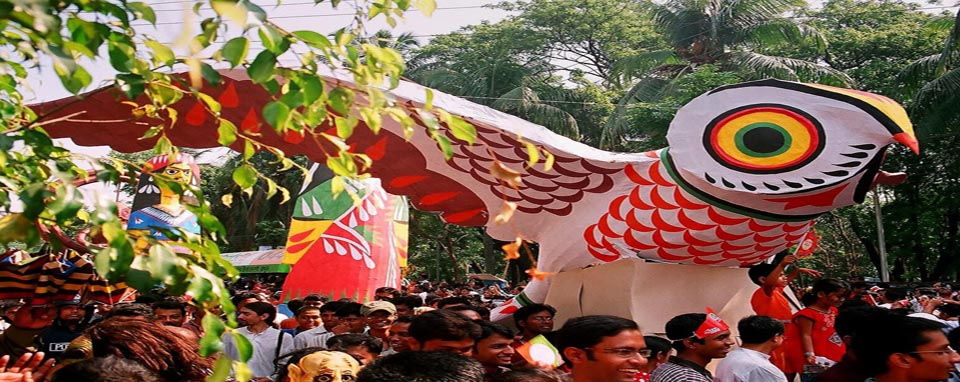
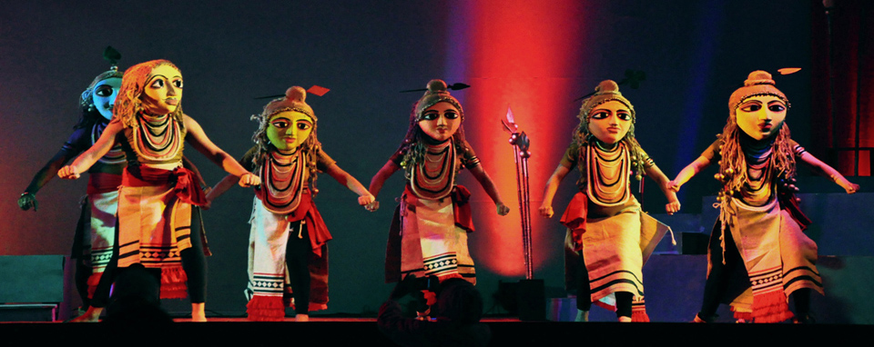
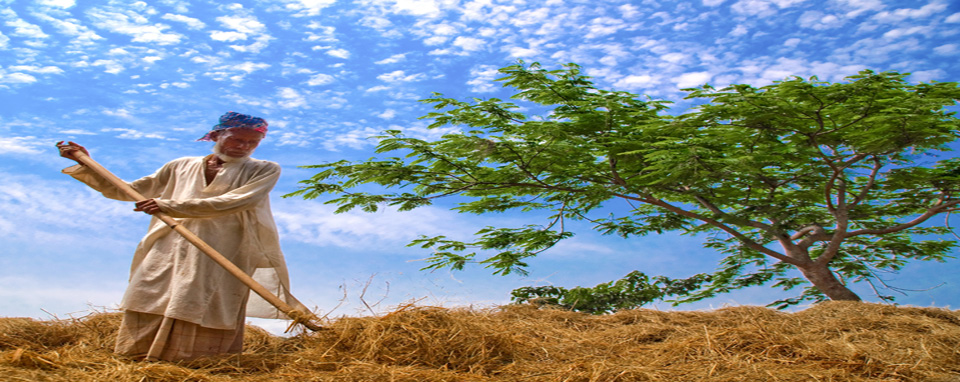
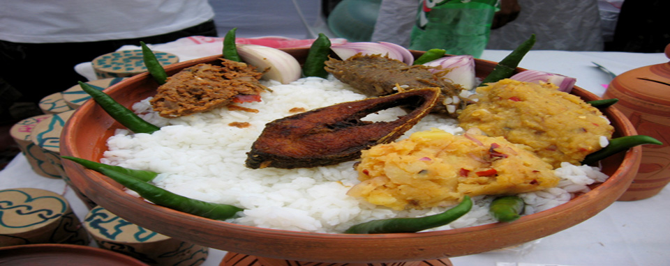
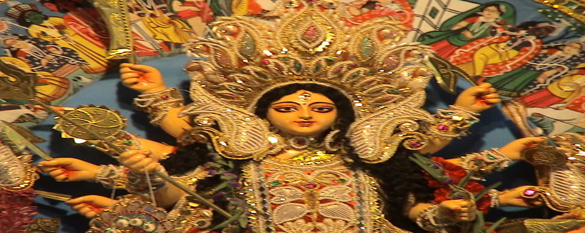
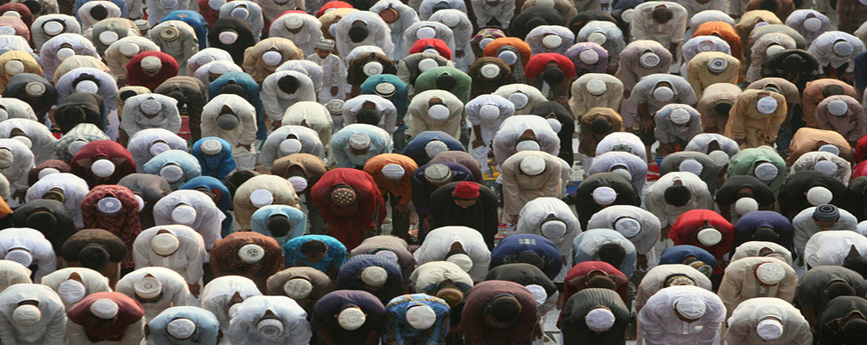
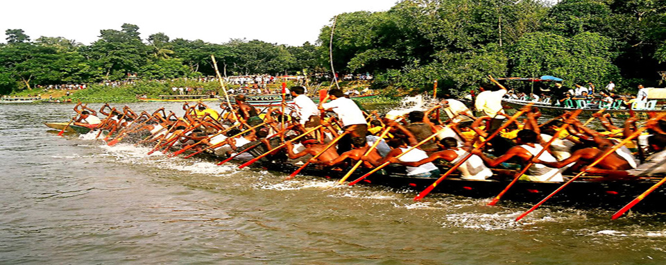
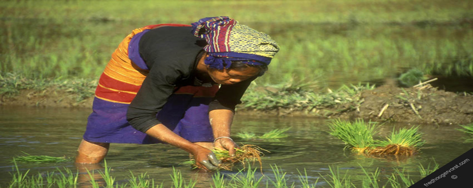
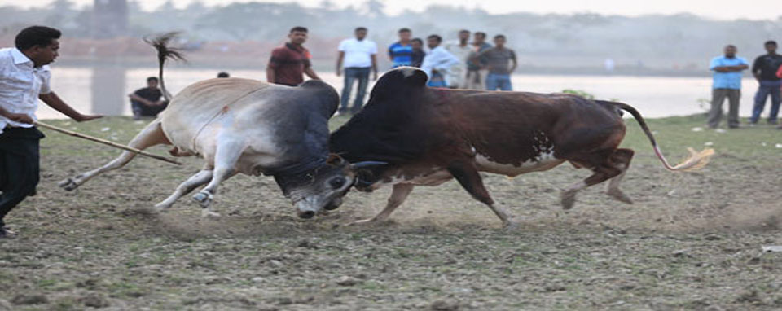
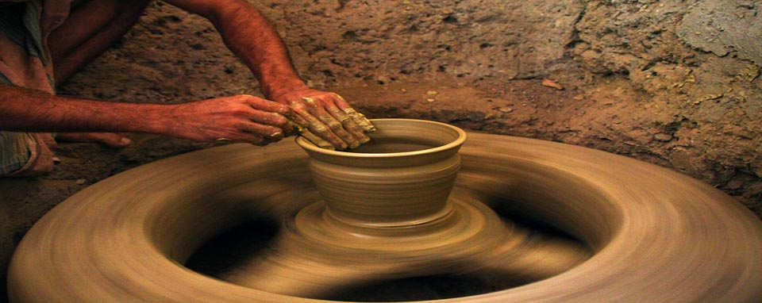
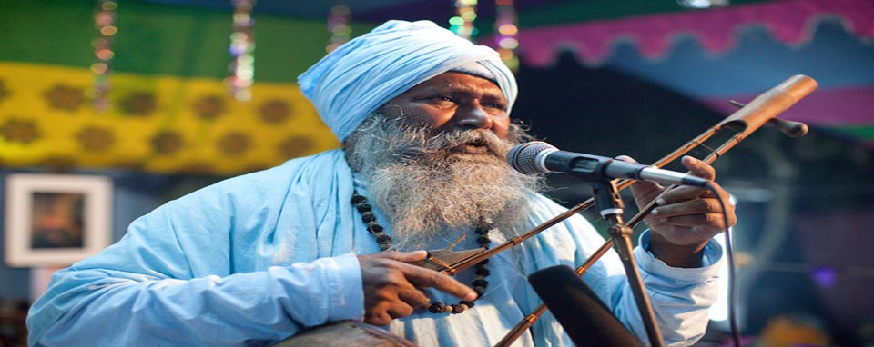
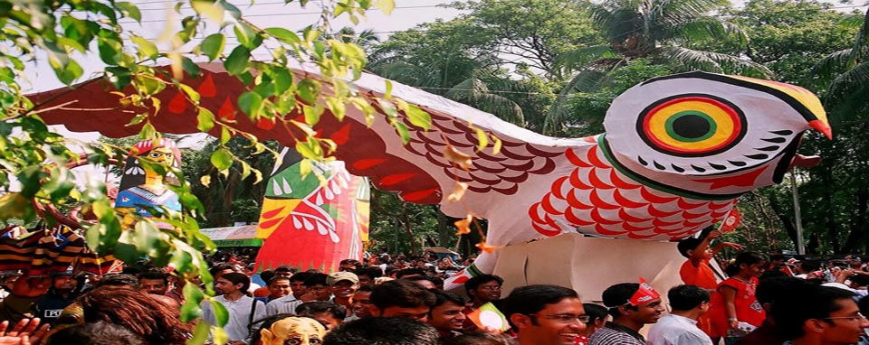
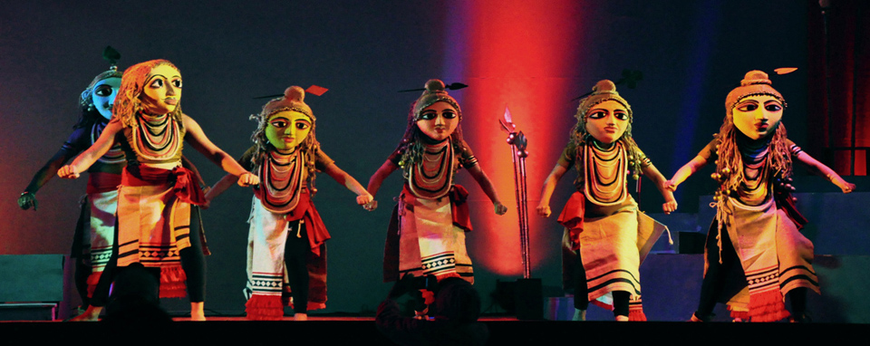
Bangladesh is bordered by India on all sides except for a small border with Myanmar on the south-east and the Bay of Bengal to the south. Together with the Indian state of West-Bengal, it makes up the ethno-linguistic region of Bengal. The name 'Bangladesh' means 'The Country of Bengal' in the official Bengali language.
Reflecting the long history of the region, Bangladesh has a culture that encompasses elements both old and new. The Bengali language boasts a rich literary heritage, which Bangladesh shares with the Indian state of West-Bengal. The earliest literary text in Bengali is the 8th century Charyapada. Medieval Bengali literature was often either religious (e.g. Chandidas), or adapted from other languages (e.g. Alaol). Bengali literature reached its full expression in the 19th century, with its greatest icons being poets Rabindranath Tagore and Kazi Nazrul Islam.
Prior to the time of Bangladesh's liberation in 1971, most tourists kept their visits to mainly Dhaka and Chittagong. Since 2000, however tourism in other areas of Bangladesh has soared in popularity. Some of the most popular destinations are Cox's Bazar, Teknaf, Sundarbans, Kuakata, Paharpur and Tetulia.